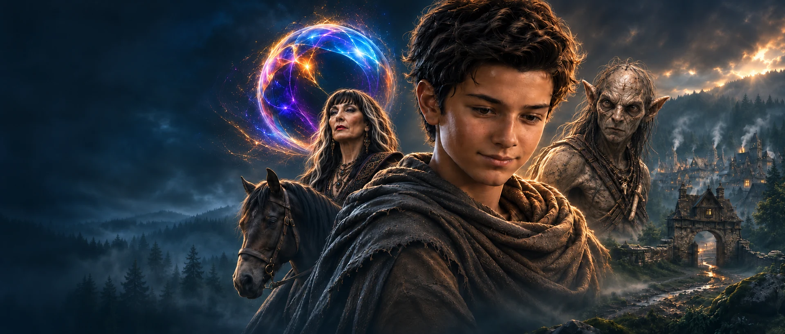

Start the story
The Story So Far
Experience Chapters 1–5 together in one full-length film. This is the place to begin the Traveler's journey.
Watch the full film
The Orb Story
A mysterious power. A Traveler seeking answers. A world waiting to be discovered.
Enter the world of The Orb
A young traveler journeys in a world full of forgotten mysteries. When an encounter with a mysterious Orb awakens a power he doesn't yet understand, his journey becomes a search for answers about the world around him—and himself.
The Orb is an original cinematic fantasy series created by Jason Arts, following the Traveler and his horse through a world of wonder, danger and discovery.
Start the story
Experience Chapters 1–5 together in one full-length film. This is the place to begin the Traveler's journey.
Watch the full film
A glimpse of the journey
Get a glimpse of the world, the mystery and the journey ahead.
Watch the trailerBeyond the road
Forests and villages, forgotten places and stories carried through the ages. Eryndor is a living world with far more waiting beyond the next turn in the road.

An emerging power
Something has awakened within him. What it means—and where it will lead—remains to be discovered.

Shadows on the road
Not everything that moves through Eryndor wants to be found. Some dangers make themselves known in silence.

Echoes of the past
Long before the Traveler's journey, powers and stories left their mark on this world. Their full meaning is still hidden.
A wider world
From forests and mountains to distant shores, there is much more of the world to explore.
Explore the map (opens image)
Eight recent regular YouTube uploads. Shorts are excluded.
Before Chapter 6, return to where the journey began. The Orb: The Story So Far brings Chapters 1–5 together as one continuous cinematic fantasy film. A lone Traveler. A faithful horse. A mysterious Orb. A power he does not yet understand. The full film releases NOV 4TH at 5PM Central. Watch the full film: Stay…
Watch on YouTubeThe Bloom is an original score from The Orb: Chapter 4. This piece was created around one of the more mysterious and atmospheric moments in the chapter, with a softer cinematic sound built around discovery, wonder, and the strange beauty of the world surrounding the Traveler. A quieter piece from the growing musical…
Watch on YouTubeThe Horse That Choose is an original score from The Orb: Chapter 3. This piece was created to support one of the quieter, more emotional moments in the story — the connection between the Traveler and the horse that becomes part of his journey. If you’ve been following The Orb, this is one of the musical themes tied…
Watch on YouTubeThe journey continues in The Village That Turned Away — Chapter 5 of The Orb. The Traveler has crossed ruins, followed strange signs, encountered people who offered both kindness and suspicion, and carried questions he still cannot answer. But Chapter 5 marks a shift. The world of The Orb begins to open wider, the…
Watch on YouTubeThe road has carried the Traveler somewhere new. But not everyone is willing to welcome him. The Village That Turned Away — Chapter 5 of The Orb pushes the journey deeper into Eryndor as the world begins opening and the larger story moves closer to the surface. This is the official trailer for The Orb Chapter 5. 🌑…
Watch on YouTubeThe Bloom Redux is a darker, more tense variation of The Bloom from The Orb: Chapter 4. Where the original version leans more toward wonder and discovery, this arrangement pushes the same musical idea into a more uneasy and dramatic direction. Same world. Same moment. Very different feeling. Another piece from the…
Watch on YouTubeFor nearly two thousand years, the Orb was forgotten. Once believed to hold the power to restore what the world had lost, its story slowly faded into legend. The search ended. The ruins were abandoned. And eventually, the Orb became little more than a myth. Until a young Traveler felt something calling him toward the…
Watch on YouTubeThe journey continues in Unseen Bloom — Chapter 4 of The Orb. After everything the Traveler has survived, the strange forces surrounding his journey are becoming harder to ignore. What once felt distant is beginning to take shape, and the forgotten world around him is slowly revealing that there is far more at work…
Watch on YouTube